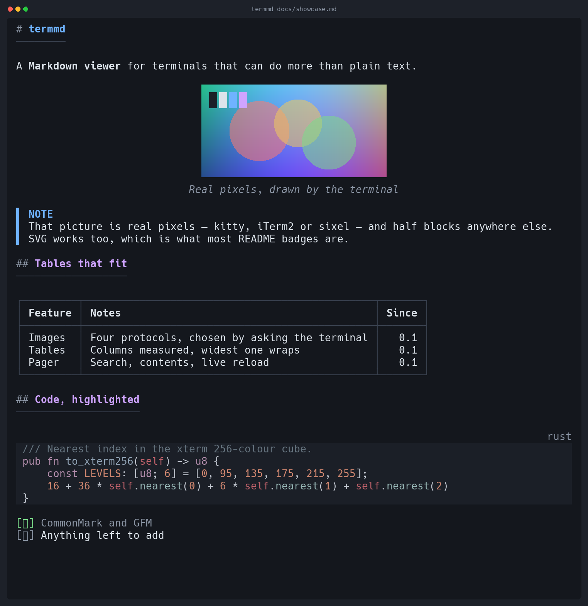
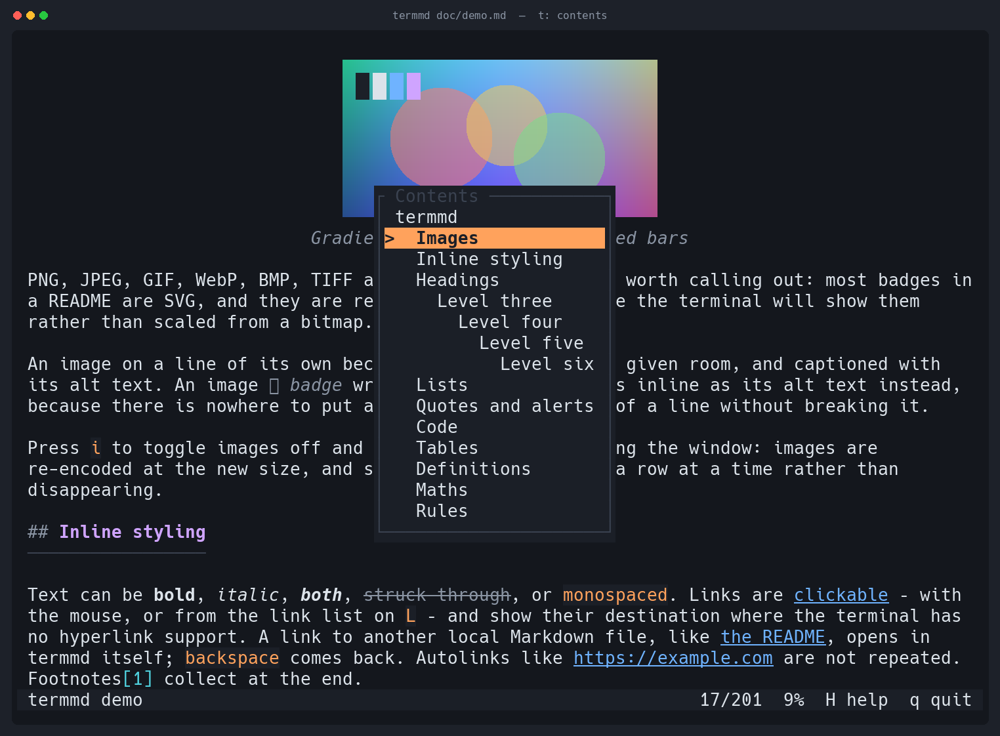

A Markdown viewer for terminals that can do more than plain text.

Terminals quietly became capable. They do 24-bit colour, they draw images through
three different protocols, they have clickable hyperlinks, and they know how wide a
Japanese character is. Most terminal Markdown viewers were written before some of
that was true, and it shows: tables come out ragged or missing, images turn into
[image], CJK text overflows the margin, and a wide table is simply cut off.
Four backends, chosen by asking the terminal what it supports: the kitty graphics protocol, iTerm2 inline images, DEC sixel, and Unicode half blocks. PNG, JPEG, GIF, WebP, BMP, TIFF and SVG — vector art rasterised at the size it will be shown, so badge text stays legible.
Images at an http(s) URL are not fetched by default:
opening a document should not make network requests you did not ask for. Most README
badges are remote, so if a picture is missing, that is usually why — and termmd says
so where the image would have been, rather than leaving a gap.
termmd docs/ lists a directory's Markdown, each file with its first
heading, as a document you can follow links out of — backspace comes back.
termmd https://…/README.md fetches and renders, resolving the relative
links and images inside it against where it came from.
:rocket: is drawn as a rocket, from the alias set GitHub accepts, and
$E = mc^2$ as E = mc². What Unicode has no
character for is left exactly as written, because TeX is still readable.
Column widths are measured, not guessed. Spare room goes where it is needed; when
space runs short the prose column wraps while 1.2.0 and Yes
stay intact. Too narrow for a grid, and the table becomes readable records instead of
a mangled box.
Text is measured in display columns over grapheme clusters, so CJK, emoji and combining accents wrap where they should. Lists hang their continuation lines under the text. GitHub alerts get their own colour and label.
Search with live highlighting, a table of contents you can jump from, a link list, horizontal scrolling for wide tables, and live reload on save. Links to other local Markdown files open in termmd; backspace comes back.
213 languages and 32 themes through syntect. Fence languages resolve through aliases, and a block with no language at all is sniffed from its first line.
Truecolor falls back to 256, then 16, then to bold and underline. Box drawing falls
back to ASCII. Every fallback can be forced, and termmd --caps shows what
was detected and why.
Press t for the contents, / to search, L for links, i to toggle images. The mouse belongs to your terminal, so drag still selects and copies — the wheel scrolls through alternate scroll.
y copies the code block you are looking at to your clipboard, over OSC 52, which works down an ssh connection. It copies the source as written — no highlighting, no line numbers, and no trailing newline, so a shell snippet lands at your prompt instead of running itself.

Detection is by live query where possible: termmd asks the terminal what it
supports and only guesses from TERM when nothing answers.
| Terminal | Images | Colour | Hyperlinks |
|---|---|---|---|
| kitty, Ghostty, WezTerm | kitty protocol | truecolor | yes |
| iTerm2 | kitty protocol (3.5+), else iTerm2 protocol | truecolor | yes |
| foot, mlterm, xterm | sixel | truecolor | varies |
| Windows Terminal, Konsole | sixel | truecolor | yes |
| Alacritty, Terminal.app, others | half blocks | 256 or 16 | varies |
| tmux 3.4+, sixel terminal | sixel, drawn by tmux | inherited | inherited |
| tmux otherwise, screen | half blocks | inherited | inherited |
Inside tmux the terminal that answers is tmux, and it claims sixel whether or not the
terminal it draws on could show one. So termmd asks tmux what it decided the
client can do — #{client_termfeatures} — and takes pictures and
hyperlinks from that. A client that cannot manage them keeps half blocks.
Sixel is encoded by termmd itself, quantisation included: median cut over a 15-bit
histogram, Floyd–Steinberg dithering, run-length encoded output. No libsixel.
# homebrew brew install EdMUK/tap/termmd # from crates.io cargo install termmd # or the release archive, without compiling cargo binstall termmd # or a prebuilt binary (macOS, Linux, Windows) curl -sSL https://github.com/EdMUK/termmd/releases/latest/download/termmd-aarch64-apple-darwin.tar.gz | tar xz sudo install termmd-aarch64-apple-darwin/termmd /usr/local/bin/termmd
# then termmd README.md # interactive pager termmd -P README.md # print and exit termmd --remote-images R.md # fetch http(s) images — off by default termmd --watch NOTES.md # re-render on save termmd --caps # what termmd detected about your terminal termmd --completions zsh > ~/.zfunc/_termmd # bash, fish, powershell, elvish too termmd --man > /usr/local/share/man/man1/termmd.1
It is almost always a remote image. termmd does not fetch http(s) URLs
unless you ask it to, so most README badges show a placeholder that says exactly that:
🖼 Build (remote image, run with --remote-images) 🖼 diagram.png (file not found) 🖼 photo.avif (cannot read AVIF image)
Pass --remote-images, or set remote-images = true in
~/.config/termmd/config.toml to make it the default. If images are missing
for some other reason, termmd --caps reports which protocol was detected.
Piped output is plain text with no escape sequences, so termmd doc.md | grep
behaves. Full options, configuration and theming are in the
README.